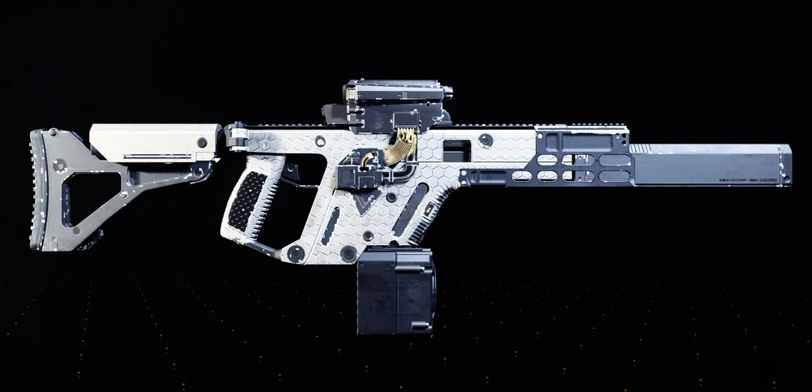
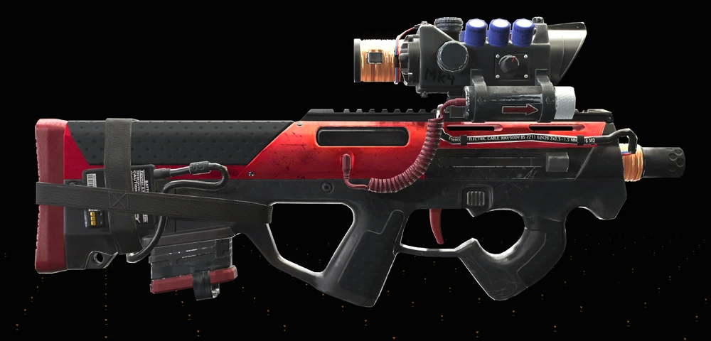
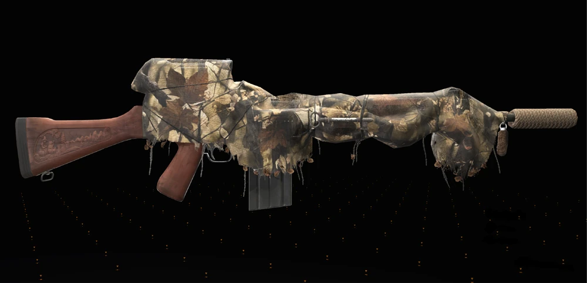
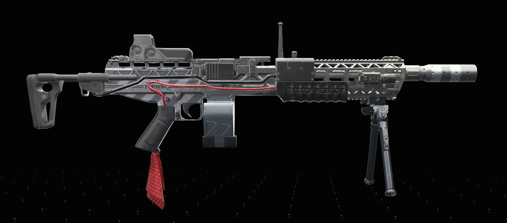
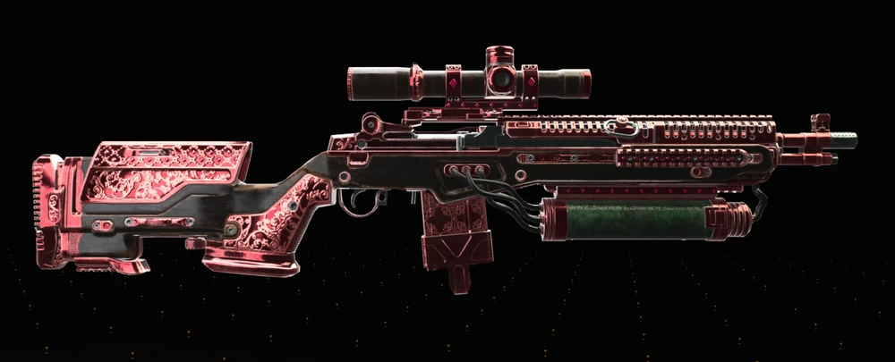
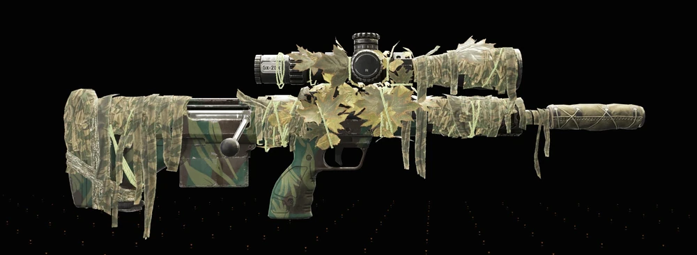

Exóticas de combate
Consulte rapidamente armas exóticas organizadas por tipo, origem e aplicação no endgame.
Este catálogo reúne as principais armas exóticas de The Division 2 em um formato direto e organizado para consulta rápida. Aqui você encontra onde cada arma é obtida, como ela se encaixa no endgame e em quais builds ela funciona melhor.
Consulte rapidamente armas exóticas organizadas por tipo, origem e aplicação no endgame.
Veja de forma clara se a arma vem de raid, incursão, progressão especial ou missões lendárias.
Quando disponível, cada arma leva para um guia completo com detalhes de farm, uso e builds recomendadas.
Estas são as armas exóticas que já fazem mais sentido dentro da estrutura atual do site e que se conectam diretamente com raids, incursão, lendárias e builds.
Uma visão rápida e organizada das armas exóticas mais relevantes do portal, com foco em origem, estilo de uso e identidade visual consistente.

Os efeitos positivos são renovados quando você está fora de combate.
O Rifle de Assalto Exótico Camaleão pode ser dropado em qualquer lugar do mundo aberto, mas a melhor forma é farmar áreas ou missões com loot direcionado para Rifles de Assalto (AR). Aumente as chances jogando nas dificuldades Desafiante ou Heroica, recompensas de facções ou no modo Summit.

A melhor estratégia é farmar o modo Countdown (Contagem Regressiva) com o saque alvo definido para Fuzis de Assalto. Outras formas incluem abrir Caches Exóticos (recompensas de projetos semanais, The Summit ou vendedor da Contagem Regressiva).

É obtido principalmente concluindo 5 desafios no modo Cume (The Summit). Alternativamente, ele pode cair como saque exótico em qualquer missão/área com loot direcionado para fuzis de assalto ou em Caches Exóticos (recompensas de contagem regressiva/projetos).

Pode ser obtida derrotando inimigos, abrindo baús de armas e em esconderijos exóticos. A melhor forma é farmar em áreas ou missões que tenham fuzis de assalto como alvo de saque. O modo (The Summit) e Countdown também é recomendado para farmar exóticos.

Pode ser obtida principalmente completando a missão da Caçada do Capitão Lewis no Jefferson Trade Center para ganhar o projeto. Após obtê-la pela primeira vez, ela entra no loot geral, podendo ser farmada em áreas de Metralhadora Leve (LMG) ou depósitos exóticos.


Doctor Home:O rifle exótico Doutor Lar (Doctor Home),pode ser obtido principalmente completando a missão de Caçada do General Anderson na "Usina Elétrica Pentco Fairview". Após a conclusão, a arma pode cair como saque em áreas ou missões que tenham rifles como alvo de loot, além de esconderijos exóticos e do modo Contagem Regressiva.

O Rifle de precisão exótico Mantis (Louva-a-Deus) pode ser obtido principalmente através de saques direcionados (Targeted Loot) em áreas com rifles de precisão, no modo Summit ou no Countdown. Após a Temporada 2, ele foi adicionado ao "loot pool" geral, permitindo drop em qualquer atividade.
Esta leitura rápida ajuda o jogador a sair do catálogo e já pensar em aplicação prática.
Com a vitrine principal em exoticas.html e este catálogo focado em armas exóticas, o portal fica mais organizado para consulta rápida, builds e expansão futura do conteúdo.